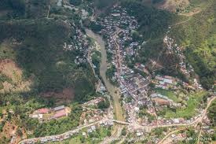

- Parents:
-
My parents has lived in the village called Anosibe An'Ala in the photo below. 
I am a son of a mother who is called Sahondra. She had already had a husband before being together with my father. But that was other story which I never knew.
About my father, I have known him since I was still in high school.But before that, I didn't know him because they broke up when I was two years old as my mother told me.
A sad story which I will never forget is the moment during wich my father past away.
On 2014, when I was still studying in high school, our house were burned and also we couldn't get anything out of the house apart from clothes that we wore in the bed that night because the fire that burned our house were sudden and moved so about
tenhouses were burned in just about two hours.The next morning, we accommodated separately in friends houses. At that time, I felt the bitterness of this life.I had to move to my father's house and we lived together, just I and him.
I never knew and never lived with a father before that time. The worst case scenario was that after living together with my father during few several weeks, he past away by falling into the river called mahamavo which is a river surrounds my town.
- Siblings:
-
I have three siblings, two sisters and one brother. but they are all from my mother side because it's just me who is my father's child.
My older half sister's name is Tahiana and my younger half sister's name is Faratiana.Lastly, my half brother's name is Hajatiana.